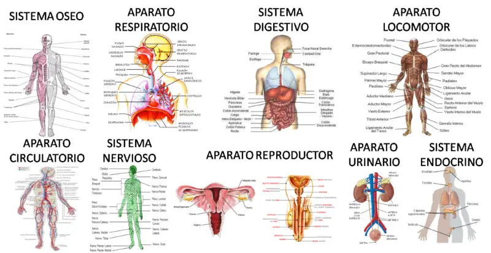

El cuerpo humano es la estructura física y material del ser humano. Está formado por una gran cantidad de células que trabajan juntas para realizar diferentes funciones necesarias para mantener la vida. Las células se agrupan para formar tejidos y órganos. A su vez, un conjunto de órganos agrupados que contribuyen a la misma función forman los aparatos y sistemas del cuerpo, como el aparato digestivo y el sistema nervioso. Aquí tienes algunos detalles sobre el cuerpo humano: Partes del Cuerpo: El cuerpo humano se conforma en tres partes principales: cabeza, tronco y extremidades. La cabeza contiene los órganos de los sentidos, como los ojos y los oídos. Además, dentro del cráneo se encuentra el encéfalo. Las extremidades se dividen en cuatro: dos inferiores (muslos, piernas y pies) y dos superiores (brazos, antebrazos y manos). El tronco se divide en tórax (que contiene los pulmones y el corazón) y abdomen (donde se encuentran el estómago, intestinos, hígado, páncreas, bazo y riñones). Cavidades del Cuerpo: En el cuerpo humano existen diferentes cavidades en cuyo interior se encuentran distribuidos los órganos. Las principales cavidades son: Cavidad dorsal: Se divide en cavidad craneal (donde se encuentra el encéfalo) y cavidad vertebral (que contiene la médula espinal). Cavidad torácica: Contiene los pulmones y el corazón. Cavidad abdominal: Situada debajo de la cavidad torácica, contiene órganos como el estómago, intestino, hígado y riñones. Cavidad pélvica: Contiene la vejiga urinaria y órganos reproductores. Niveles de Organización: El cuerpo humano tiene diferentes niveles estructurales: Nivel atómico y molecular: Está compuesto por elementos químicos como carbono, hidrógeno, oxígeno, nitrógeno, azufre y fósforo. Nivel celular: Un adulto medio tiene alrededor de 38 billones de células, siendo los glóbulos rojos los más abundantes. Nivel tisular: Formado por diferentes tejidos, que son conjuntos de células con funciones específicas. Nivel de órganos: Los órganos están formados por tejidos y realizan funciones específicas. Nivel de sistemas: Los sistemas (como el sistema nervioso, digestivo, circulatorio, etc.) están formados por órganos que trabajan juntos.
